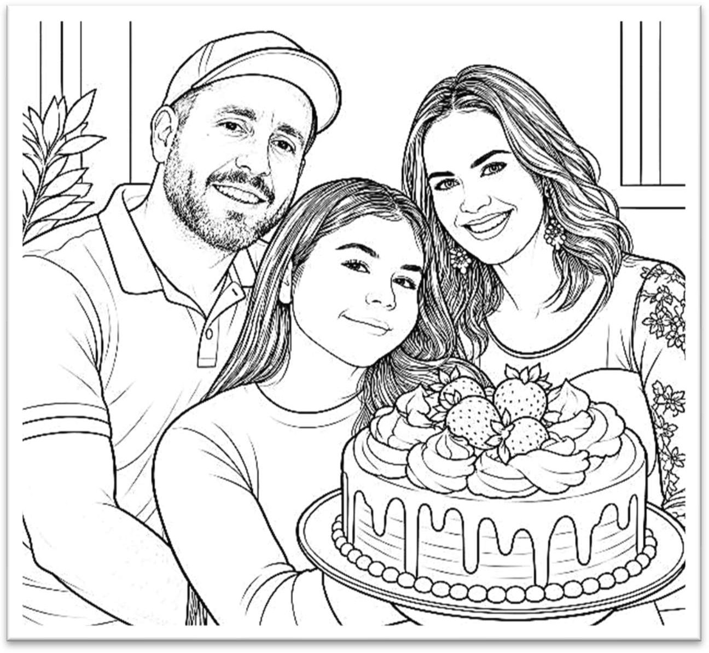

Os bolos da Bisa Zelinda: Uma Doçura que Passa de Geração em Geração

Marcel, Patrícia e a bisneta Maria Clara também guardam no coração um carinho especial pelos bolos da Bisa Zelinda. Para eles, cada fatia traz muito mais do que o sabor de uma receita querida: traz a alegria de estar em família, o aconchego dos encontros ao redor da mesa e a doçura de momentos que merecem ser lembrados.
Há sabores que parecem guardar o tempo dentro deles. O aroma de um bolo recém assado, a maciez da massa e aquele gostinho tão familiar são capazes de despertar lembranças e aproximar gerações. Enquanto Marcel e Patrícia compartilham esse carinho pelas receitas da Bisa, a pequena Maria Clara começa também a fazer parte dessa história, crescendo cercada pelos sabores e afetos que tornam a família tão especial.
Assim, os bolos de Zelinda vão muito além da cozinha. São parte de uma herança afetiva que passa de filhos para netos e chega aos bisnetos, preservando tradições e criando novas lembranças a cada encontro. Hoje, Maria Clara tem a oportunidade de conhecer esses sabores e, quem sabe, guardar para sempre na memória o gostinho dos bolos preparados pela bisavó.
Porque algumas receitas não precisam de grandes ocasiões para se tornarem inesquecíveis. Basta uma mesa compartilhada, a família reunida e o carinho de quem prepara cada detalhe pensando nos seus.
Os bolos da Bisa Zelinda são assim: doces que alimentam o corpo, aquecem o coração e mantêm viva a história de amor de uma família, uma fatia de cada vez.